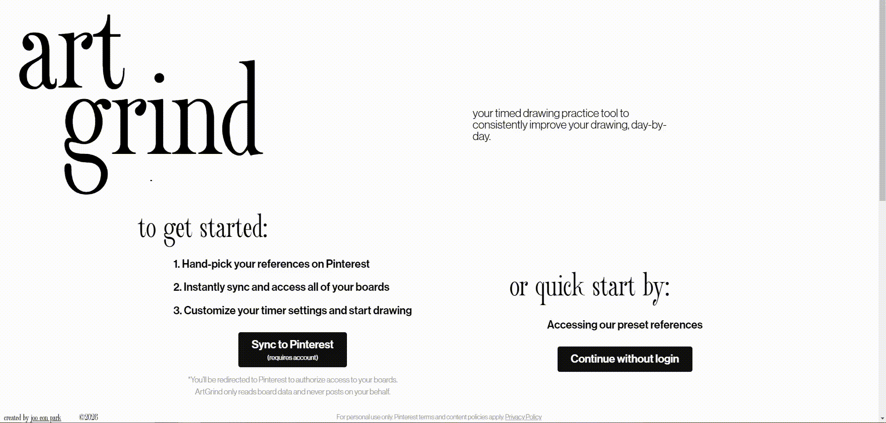

Original Interface
Artgrind is a website that provides a customizable and convenient way for artists to hone their skills. It allows users to sync pinterest boards to randomly select a set number of images to be displayed for a specific period of time. Artists then draw the randomly selected images to improve their drawing ability.
Original interface URLLocating the Object
To locate the "Play a chime at:" button, navigate to the board selection dashboard by selecting the "continue without login" option on the homescreen, move your cursor to the "play a chime at:" section of the board at the bottom of the screen. The buttons between "play a chime at" and "Start timed practice" are the objects we are focusing on.
Triggers
Click on:
Click off:
Hover on:
Hover off:
Rules
Hover
On
- Darkens the background color grey from #efefef to #DDDDDD using a 200 ms ease out transition
Off
- Lightens the background color grey from #DDDDDD to #efefef using a 200 ms ease out transition
Click
On
- Sets the background color from #efefef to #000000
- Sets the text color from to #000000 to #ffffff
- Fills the checkbox square to the left of the button content text with a smaller square
- Squishes the button's boundaries by transforming the scale to a minimum of .84
- User will now hear an audio effect at the selected time interval during their drawing session
Off
- Changes the background color from #000000 to #efefef
- Sets the text color from #ffffff to #000000
- Unfills the checkbox square to the left of the button content text
- Squishes the button's boundaries by transforming the scale to a minimum of .84
Feedback
Sees
Hover
On
- Darkens the background color grey from #efefef to #DDDDDD using a 200 ms ease out transition
Off
- Lightens the background color grey from #DDDDDD to #efefef using a 200 ms ease out transition
Click
On
- Sets the background color from #efefef to #000000
- Sets the text color from to #000000 to #ffffff
- Fills the checkbox square to the left of the button content text with a smaller square
- Squishes the button's boundaries by transforming the scale to a minimum of .84
Off
- Changes the background color from #000000 to #efefef
- Sets the text color from #ffffff to #000000
- Unfills the checkbox square to the left of the button content text
- Squishes the button's boundaries by transforming the scale to a minimum of .84
Feels
The microinteraction does not return any haptic feedback.
Hears
The microinteraction does not return any audial feedback. The chime only plays during the drawing session, which occurs well after the microinteraction concludes.
Loops & Modes
Loops
There are no loops present in the microinteraction
Modes
The button has an active and passive mode. Hovering over the active button lowers its opacity to 80%.
Assets

Static Images
Static images showing each state of the existing microinteraction.
-
Initial state: all chime buttons rest in light grey with empty checkboxes.

-
Initial hover: the hovered button darkens from #efefef to #DDDDDD.

-
Initial click animation: the button squishes toward a .84 scale as it is pressed.

-
Active state: the selected button turns black with white text and a filled checkbox.

-
Active hover: hovering the selected button lowers its opacity to 80%.

-
Active click animation: the button squishes again as it is clicked off.